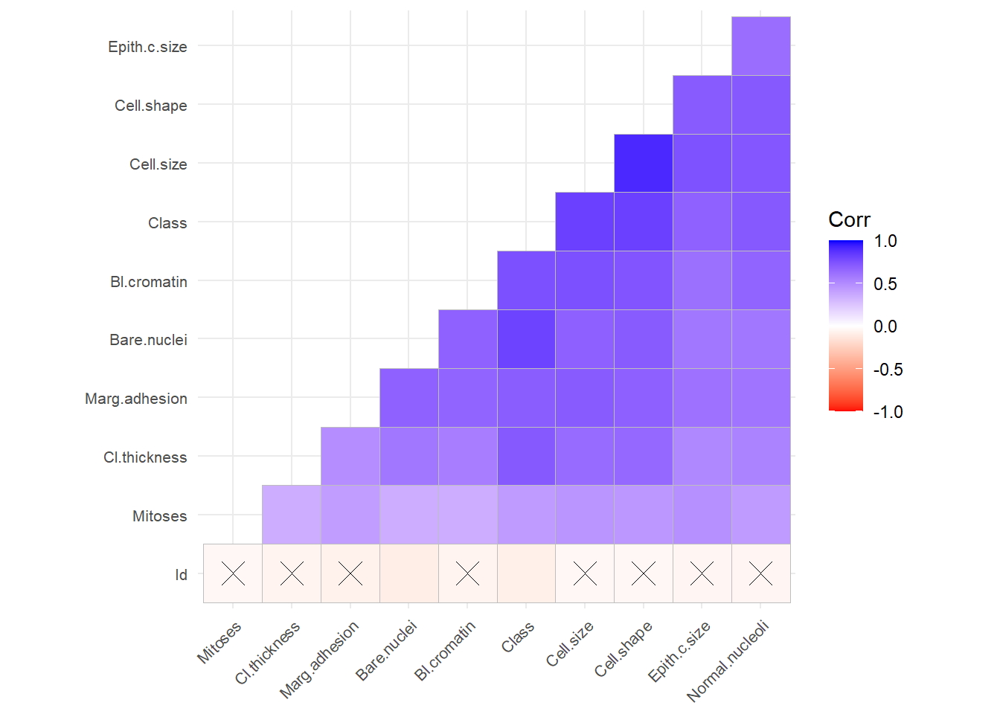
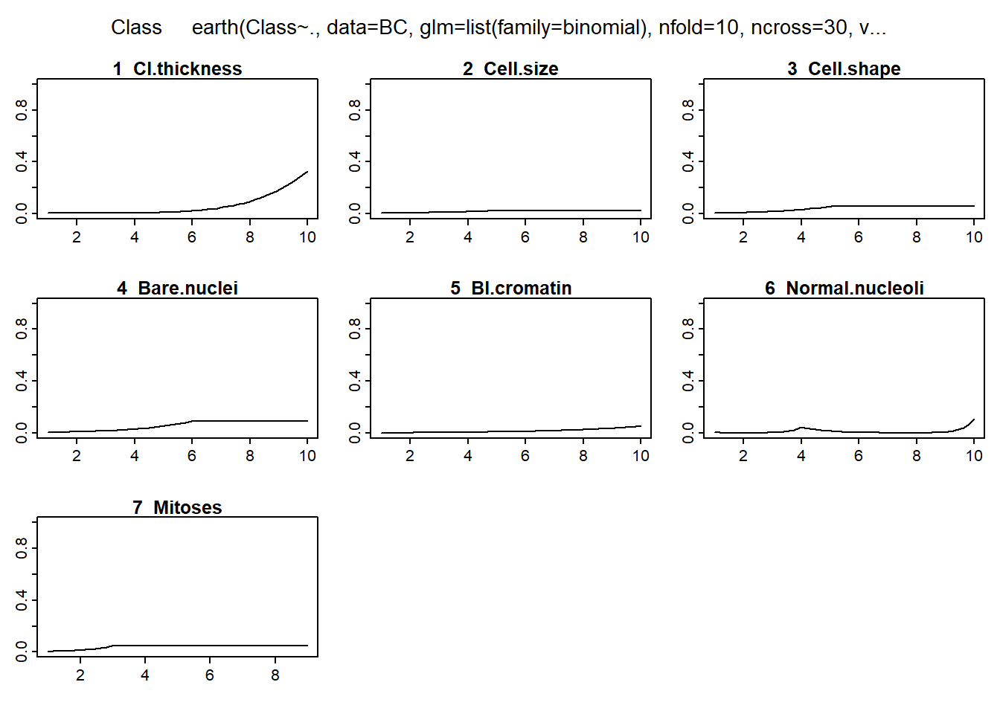
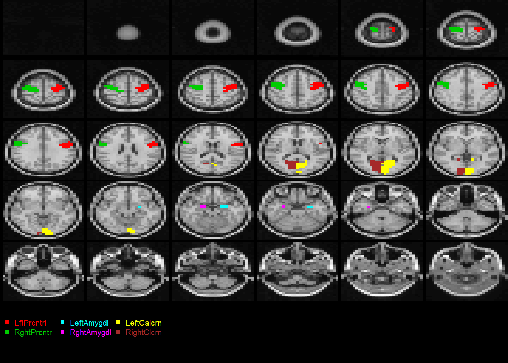
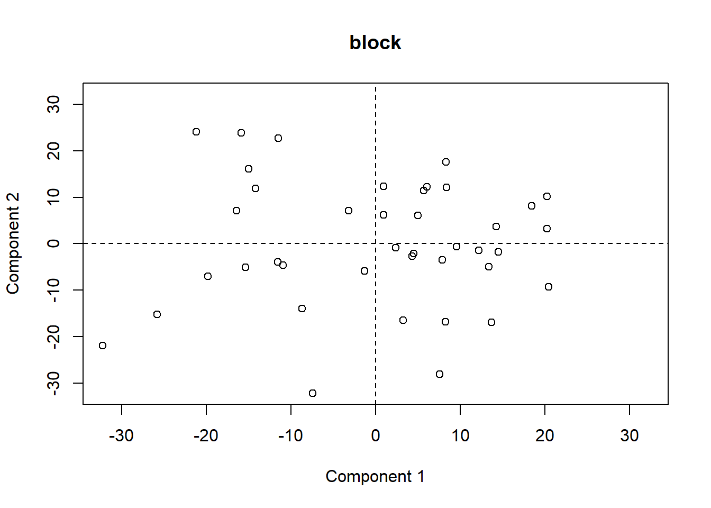
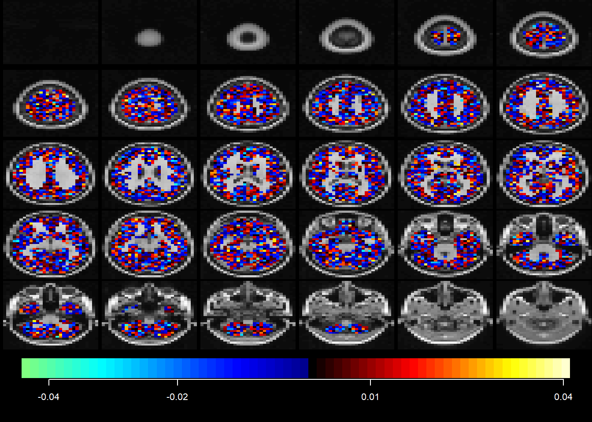
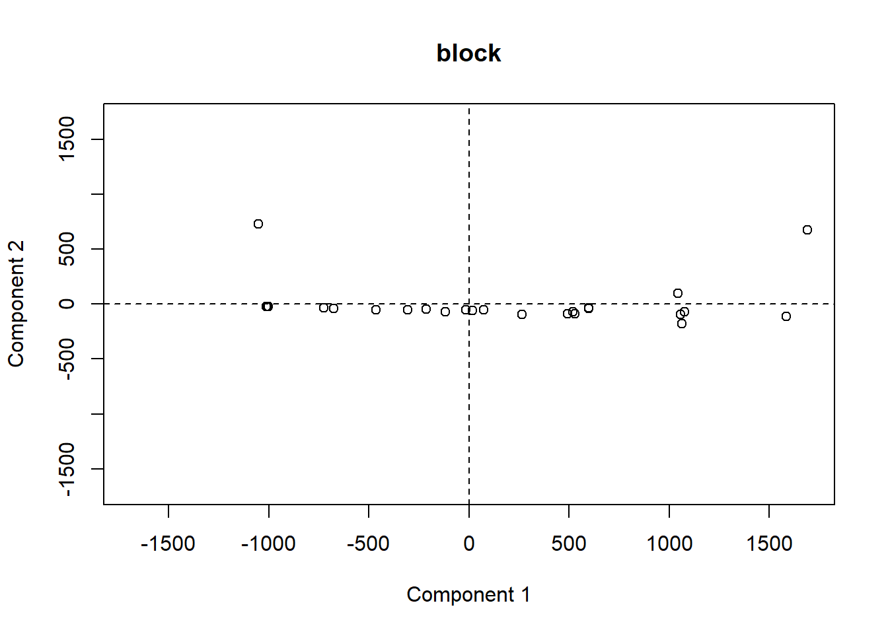
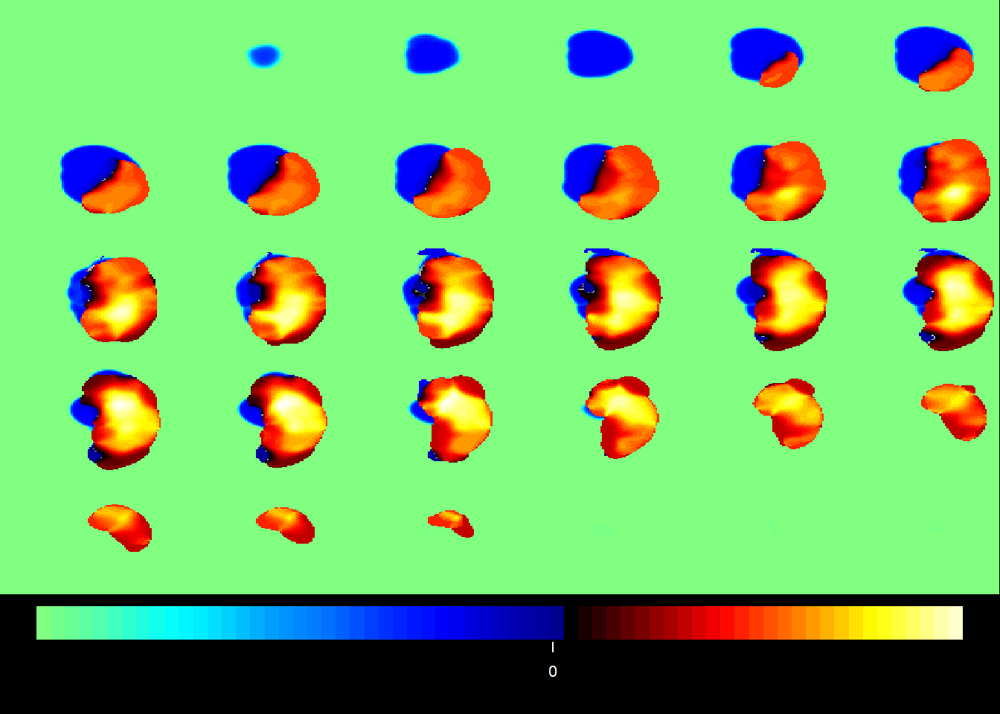
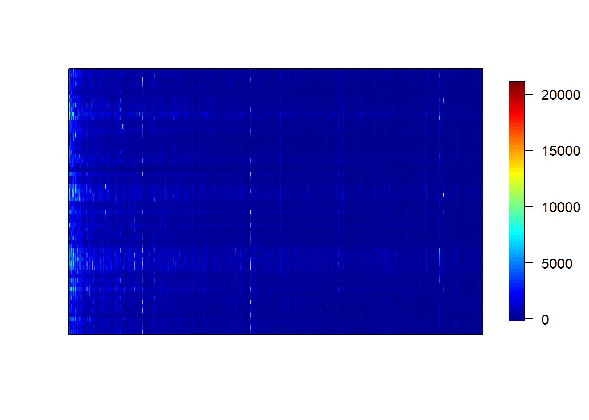

Chapter 5 Multivariate Analysis
The following section illustrates the different methods in multivariate analyses. These methods are not to be confused with the more multivariable analyses discussed under Statistics.
5.1 Multivariate regression
Multivariable and multivariate regression are often used interchangeably. Some use the term multivariate when there are more than one dependent variables. Multivariable regression refers to linear, logistic or survival curve analysis in the previous chapter. Multivariate regression refers to nested models or longitudinal models or more complex type of analyses described below.
5.1.1 Penalised regression
We used penalised logistic regression (PLR) to assess the relationship between the ASPECTS regions and stroke disability (binary outcome) (Phan et al. 2013). PLR can be conceptualized as a modification of logistic regression. In logistic regression, there is no algebraic solution to determine the parameter estimate (β coefficient) and a numerical method (trial and error approach) such as maximum likelihood estimate is used to determine the parameter estimate. In certain situations overfitting of the model may occur with the maximum likelihood method. This situation occurs when there is collinearity (relatedness) of the data. To circumvent this, a bias factor is introduced into the calculation to prevent overfitting of the model. The tuning (regularization) parameter for the bias factor is chosen from the quadratic of the norms of the parameter estimate. This method is known as PLR. This method also allows handling of a large number of interaction terms in the model. We employed a forward and backward stepwise PLR that used all the ASPECTS regions in the analysis, calling on the penalized function in R programming environment. This program automatically assessed the interaction of factors in the regression model in the following manner. The choice of factors to be added/deleted to the stepwise regression was based on the cost complexity statistic. The asymmetric hierarchy principle was used to determine the choice of interaction of factors. In this case, any factor retained in the model can form interactions with others that are already in the model and those that are not yet in the model. In this analysis, we have specified a maximum of 5 terms to be added to the selection procedure. The significance of the interactions was plotted using a previously described method. We regressed the dichotomized mRS score against ASPECTS regions, demographic variables (such as age and sex), physiological variables (such as blood pressure and serum glucose level) and treatment (rt-PA). The results are expressed as β coefficients rather than as odds ratio for consistency due to the presence of interaction terms.
##
## Attaching package: 'mice'## The following object is masked from 'package:kernlab':
##
## convergence## The following object is masked from 'package:BiocManager':
##
## version## The following object is masked from 'package:signal':
##
## filter## The following object is masked from 'package:pillar':
##
## squeeze## The following objects are masked from 'package:BiocGenerics':
##
## cbind, rbind## The following object is masked from 'package:stats':
##
## filter## The following objects are masked from 'package:base':
##
## cbind, rbind## [1] "Id" "Cl.thickness" "Cell.size" "Cell.shape"
## [5] "Marg.adhesion" "Epith.c.size" "Bare.nuclei" "Bl.cromatin"
## [9] "Normal.nucleoli" "Mitoses" "Class"## [1] 8#remove duplicates
#keep Id to avoid creation of new duplicates
#BreastCancer1<-unique(BreastCancer) #reduce 699 to 691 rows
#impute missing data
#m is number of multiple imputation, default is 5
#output is a list
imputed_Data <- mice(BreastCancer, m=5, maxit = 5, method = 'pmm', seed = 500)##
## iter imp variable
## 1 1 Bare.nuclei
## 1 2 Bare.nuclei
## 1 3 Bare.nuclei
## 1 4 Bare.nuclei
## 1 5 Bare.nuclei
## 2 1 Bare.nuclei
## 2 2 Bare.nuclei
## 2 3 Bare.nuclei
## 2 4 Bare.nuclei
## 2 5 Bare.nuclei
## 3 1 Bare.nuclei
## 3 2 Bare.nuclei
## 3 3 Bare.nuclei
## 3 4 Bare.nuclei
## 3 5 Bare.nuclei
## 4 1 Bare.nuclei
## 4 2 Bare.nuclei
## 4 3 Bare.nuclei
## 4 4 Bare.nuclei
## 4 5 Bare.nuclei
## 5 1 Bare.nuclei
## 5 2 Bare.nuclei
## 5 3 Bare.nuclei
## 5 4 Bare.nuclei
## 5 5 Bare.nuclei#choose among the 5 imputed dataset
completeData <- complete(imputed_Data,2)
#convert multiple columns to numeric
#lapply output a list
BreastCancer2<-lapply(completeData[,-c(11)], as.numeric) #list
BreastCancer2<-as.data.frame(BreastCancer2)
BreastCancer2$Class<-BreastCancer$Class
#convert factor to numeric for calculatin of vif
BreastCancer2$Class<-as.character(BreastCancer2$Class)
BreastCancer2$Class[BreastCancer2$Class=="benign"]<-0
BreastCancer2$Class[BreastCancer2$Class=="malignant"]<-1
BreastCancer2$Class<-as.numeric(BreastCancer2$Class)
BC <- unique(BreastCancer2) # Remove duplicates
#check correlation
library(ggcorrplot)##
## Attaching package: 'ggcorrplot'## The following object is masked from 'package:rstatix':
##
## cor_pmatggcorrplot(cor(BC),
p.mat=cor_pmat(BC),hc.order=T, type="lower", colors=c("red","white","blue"),tl.cex = 8)
5.1.2 MARS
Multivariate adaptive regression spline (MARS) is a non-linear regression method that fits a set of splines (hinge functions) to each of the predictor variables i.e. different hinge function for different variables (Friedman and Roosen 1995). As such, the method can be used to plot the relationship between each variable and outcome. Use in this way, the presence of any threshold effect on the predictors can be graphically visualized. The MARS method is implemented in R programming environment in the earth package.
library(earth)
BC<-BC[-1]
Fit<-earth(Class ~.,data= BC,
nfold=10,ncross=30, varmod.method = "none",
glm=list(family=binomial))
plotmo(Fit)## plotmo grid: Cl.thickness Cell.size Cell.shape Marg.adhesion Epith.c.size
## 4 1 1 1 2
## Bare.nuclei Bl.cromatin Normal.nucleoli Mitoses
## 1 3 1 1
## Call: earth(formula=Class~., data=BC, glm=list(family=binomial), nfold=10, ncross=30,
## varmod.method="none")
##
## GLM coefficients
## Class
## (Intercept) -3.0367094
## h(Cl.thickness-4) 0.7610206
## h(5-Cell.size) -0.4035770
## h(5-Cell.shape) -0.6270418
## h(6-Bare.nuclei) -0.5975594
## h(Bl.cromatin-3) -0.6211132
## h(5-Bl.cromatin) -0.8983521
## h(Bl.cromatin-5) 0.9870000
## h(Normal.nucleoli-2) 5.5785046
## h(4-Normal.nucleoli) 2.9930778
## h(Normal.nucleoli-4) -6.7265575
## h(Normal.nucleoli-8) 3.9273365
## h(3-Mitoses) -1.1559421
##
## GLM (family binomial, link logit):
## nulldev df dev df devratio AIC iters converged
## 889.065 689 101.133 677 0.886 127.1 8 1
##
## Earth selected 13 of 18 terms, and 7 of 9 predictors
## Termination condition: Reached nk 21
## Importance: Cell.size, Bare.nuclei, Cl.thickness, Normal.nucleoli, Cell.shape, ...
## Number of terms at each degree of interaction: 1 12 (additive model)
## Earth GCV 0.03174149 RSS 20.3433 GRSq 0.8599283 RSq 0.8695166 CVRSq 0.8481011
##
## Note: the cross-validation sd's below are standard deviations across folds
##
## Cross validation: nterms 12.38 sd 0.75 nvars 7.22 sd 0.50
##
## CVRSq sd ClassRate sd MaxErr sd AUC sd MeanDev sd CalibInt sd
## 0.848 0.05 0.963 0.02 -1 0.859 0.991 0.008 0.252 0.162 6.01 46.7
## CalibSlope sd
## 13.6 57.55.1.3 Mixed modelling
In a standard regression analysis, the data is assumed to be random. Mixed models assume that there are more than one source of random variability in the data. This is expressed in terms of fixed and random effects. Mixed modeling is a useful technique for handling multilevel or group data. The intraclass correlation (ICC) is used to determine if a multilevel analysis is necessary ie if the infarct volume varies among the surgeon or not. ICC is the between group variance to the total variance. If the ICC approaches zero then a simple regression model would suffice.
There are several R packages for performing mixed modeling such as lme4. Mixed modeling in meta-regression is illustrated in the section on Metaanalysis. An example of mixed model using Bayesian approach with INLA is provided in the Bayesian section
5.1.3.1 Random intercept model
In a random intercept or fixed slope multilevel model the slope or gradient of the fitted lines are assumed to be parallel to each other and the intercept varies for different groups. This can be the case of same treatment effect on animal experiments performed by different technician or same treatment in different clusters of hospitals. There are several approached to performing analysis with random intercept model. The choice of the model depends on the reason for performing the analysis. For example, the maximum likelihood estimation (MLE) method is better than restricted maximum likelihood (RMLE) in that it generates estimates for fixed effects and model comparison. RMLE is preferrred if there are outliers.
5.1.4 Trajectory modelling
Trajectory analysis attempts to group the behaviour of the subject of interest over time. There are several different approaches to trajectory analysis: data in raw form or after orthonal transformation of the data in principal component analysis. Trajectory analysis is different from mixed modelling in that it examines group behaviour. The output of trajectory analysis is only the beginning of the modeling analysis. For example, the analysis may identify that there are 3 groups. These groups are labelled as group A, B and C. The next step would be to use the results in a modelling analysis of your choice.
A useful library for performing trajectory analysis is akmedoids. This library anchored the analysis around the median value. The analysis requires the data in long format. The traj library is similar to the one in Stata. It uses several steps including factor and cluster analyses to idetify groups. The traj model prefers data in wide format.
5.1.5 Generalized estimating equation (GEE)
GEE is used for analysis of longitudinal or clustered data. GEE is preferred when the idea is to discover the group effect or population average (marginal) log odds (Hubbard AE 2010). This is contrast with the mixed model approach to evaluate the average subject via maximum likelihood estimation. The fitting for mixed model is complex compare to GEE and can breakdown. The library for performing GEE is gee or geepack.
library(tidyverse)
library(gee)
#open simulated data from previous chapter
dtTime<-read.csv("./Data-Use/dtTime_simulated.csv") %>%
rename(NIHSS=Y) %>% mutate (NIHSS=abs(NIHSS))
(fit<-gee(ENI~T+Diabetes+NIHSS,
id=id,
corstr = "unstructured",
tol = 0.001, maxiter = 25,
#data=dtTrial_long)
data=dtTime))
summary(fit)5.2 Principal component analysis
Principal component analysis (PCA) is a data dimension reduction method which can be applied to a large dataset to determine the latent variables (principal components) which best represent that set of data. A brief description of the method is described here and a more detailed description of the method can be found in review (Friston et al. 2000). The usual approach to PCA involves eigen analysis of a covariance matrix or singular value decomposition.
PCA estimates an orthogonal transformation (variance maximising) to convert a set of observations of correlated variables into a set of values of uncorrelated (orthogonal) variables called principal components. The first extracted principal component aligns in the direction that contains most of the variance of observed variables. The next principal component is orthogonal to the first principle component and contains the second most of spread of variance. The next component contains the third most of spread, and so on. The latter principal components are likely to represent noise and are discarded. Expressing this in terms of our imaging data, each component yields a linear combination of ‘ischemic’ voxels that covary with each other. These components can be interpreted as patterns of ischemic injury. The unit of measurement in PCA images is the covariance of the data.
In the case of MR images, each voxel is a variable, leading to tens of thousands of variables with relatively small numbers of samples. Specialised methods are required to compute principal components. There are situations in which PCA may not work well if there is non-linear relationship in the data.
Based on cosine rule, principal components from different data are similar if values approach 1 and dissimilar if values approach 0 (Singhal et al. 2012).
5.2.1 PCA with MRI
Here we illustrate multivariate analysis with mand library.
## Loading required package: msmadata("atlas")
data("atlasdatasets")
data("template")
atlasdataset=atlasdatasets$aal
tmpatlas=atlas$aal
#overlay images
coat(template, tmpatlas, regionplot=TRUE,
atlasdataset=atlasdataset, ROIids = c(1:2, 41:44), regionlegend=TRUE)
Simulate a dataset using mand.
data("diffimg") #mand
data("baseimg")
data("mask")
data("sdevimg")
diffimg2 = diffimg * (tmpatlas %in% 41:44)
img1 = simbrain(baseimg = baseimg, diffimg = diffimg2,
sdevimg=sdevimg, mask=mask, n0=20, c1=0.01, sd1=0.05)
#dim(img1$S) #40 6422
#mand takes matrix array as argument
fit=msma(img1$S,comp=2)
plot(fit, v="score", axes = 1:2, plottype="scatter")
midx = 1 ## the index for the modality
vidx = 1 ## the index for the component
Q = fit$wbX[[midx]][,vidx]
outstat1 = rec(Q, img1$imagedim, mask=img1$brainpos)
coat(template, outstat1)
Let’s apply mand on imaging data. First we use pattern matching to extract the relevant nii files into a list.
#remotes::install_github("neuroconductor/MNITemplate")
library(MNITemplate)
#MNI choose resolution
MNI = readMNI(res = "2mm")
#create a list using pattern matching ending in .nii
#regular expression | indicates matching for ica.nii or mca_blur.nii
mca.list<-list.files(path="./Ext-Data/",
pattern = "*ica.nii|*mca_blur.nii",
full.names = TRUE)We use the imgdatamat function to read in the files with patients as rows and imaging voxels in columns.
#use imgdatamat to organise data as rows of patients and columns of voxels
#simscale reduces the size of the voxel to quarter of its size
m.list.dat<-imgdatamat(mca.list, simscale=1/4)## Malformed NIfTI - not reading NIfTI extension, use at own risk!
## Malformed NIfTI - not reading NIfTI extension, use at own risk!
## Malformed NIfTI - not reading NIfTI extension, use at own risk!
## Malformed NIfTI - not reading NIfTI extension, use at own risk!
## Malformed NIfTI - not reading NIfTI extension, use at own risk!
## Malformed NIfTI - not reading NIfTI extension, use at own risk!
## Malformed NIfTI - not reading NIfTI extension, use at own risk!
## Malformed NIfTI - not reading NIfTI extension, use at own risk!
## Malformed NIfTI - not reading NIfTI extension, use at own risk!
## Malformed NIfTI - not reading NIfTI extension, use at own risk!
## Malformed NIfTI - not reading NIfTI extension, use at own risk!
## Malformed NIfTI - not reading NIfTI extension, use at own risk!
## Malformed NIfTI - not reading NIfTI extension, use at own risk!
## Malformed NIfTI - not reading NIfTI extension, use at own risk!
## Malformed NIfTI - not reading NIfTI extension, use at own risk!
## Malformed NIfTI - not reading NIfTI extension, use at own risk!
## Malformed NIfTI - not reading NIfTI extension, use at own risk!
## Malformed NIfTI - not reading NIfTI extension, use at own risk!
## Malformed NIfTI - not reading NIfTI extension, use at own risk!
## Malformed NIfTI - not reading NIfTI extension, use at own risk!
## Malformed NIfTI - not reading NIfTI extension, use at own risk!
## Malformed NIfTI - not reading NIfTI extension, use at own risk!
## Malformed NIfTI - not reading NIfTI extension, use at own risk!
## Malformed NIfTI - not reading NIfTI extension, use at own risk!
## Malformed NIfTI - not reading NIfTI extension, use at own risk!## [1] 29 902629
midx = 1 ## the index for the modality
vidx = 1 ## the index for the component
Q = fit1$wbX[[midx]][,vidx]
outstat_fit1 = rec(Q, m.list.dat$imagedim, mask=m.list.dat$brainpos)
coat(MNI, outstat_fit1)
5.3 Independent component analysis
Independent component analysis is different from PCA in that it seeks components which are statistically independent.It separates signal from a multivariate distribution into additive components which as statistically independent. It is used in separating components of noise signal or blind source localisation.
library(fastICA)
a <- fastICA(img1$S, 2, alg.typ = "deflation", fun = "logcosh", alpha = 1,
method = "R", row.norm = FALSE, maxit = 200,
tol = 0.0001, verbose = TRUE)## Centering## Whitening## Deflation FastICA using logcosh approx. to neg-entropy function## Component 1## Iteration 1 tol = 0.002084111## Iteration 2 tol = 4.374718e-05## Component 2## Iteration 1 tol = 05.4 Partial least squares
There are several versions of partial least squares (PLS). A detailed mathematical exposition of the PLS-PLR technique used here can be found in the paper by Fort and Lambert-Lacroix (Fort and Lambert-Lacroix 2005). PLS is a multiple regression method that is suited to datasets comprising large sets of independent predictor variables (voxels in an image) and smaller sets of dependent variables (neurological outcome scores). Each voxel can take on a value of 1 (representing involvement by infarction) or 0 (representing absence of involvement) in the MR image of each patient. PLS employs a data reduction method which generates latent variables, linear combinations of independent and dependent variables which explain as much of their covariance as possible.
Linear least squares regression of the latent variables produces coefficients or beta weights for the latent variables at each voxel location in the brain in stereotaxic coordinate space.(Phan et al. 2010)
The colon dataset containing microarray data comes with the plsgenomics library (Durif et al. 2018). The analysis involves partitioning the data into training and test set. The classification data is in the Y column. This example is provided by the plsgenomics library
## For any news related to the 'plsgenomics' package (update, corrected bugs), please check http://thoth.inrialpes.fr/people/gdurif/## C++ based sparse PLS routines will soon be available on the CRAN in the new 'fastPLS' package.## [1] "list"## [1] 62 2000
#
IndexLearn <- c(sample(which(Colon$Y==2),12),sample(which(Colon$Y==1),8))
Xtrain <- Colon$X[IndexLearn,]
Ytrain <- Colon$Y[IndexLearn]
Xtest <- Colon$X[-IndexLearn,]
# preprocess data
resP <- preprocess(Xtrain= Xtrain, Xtest=Xtest,Threshold = c(100,16000),Filtering=c(5,500), log10.scale=TRUE,row.stand=TRUE)
# Determine optimum h and lambda
hlam <- gsim.cv(Xtrain=resP$pXtrain,Ytrain=Ytrain,hARange=c(7,20),
LambdaRange=c(0.1,1),hB=NULL)
# perform prediction by GSIM
# lambda is the ridge regularization parameter from the cross validation
res <- gsim(Xtrain=resP$pXtrain,
Ytrain= Ytrain,Xtest=resP$pXtest,
Lambda=hlam$Lambda,hA=hlam$hA,hB=NULL)
res$Cvg ## [1] 1## [1] 6